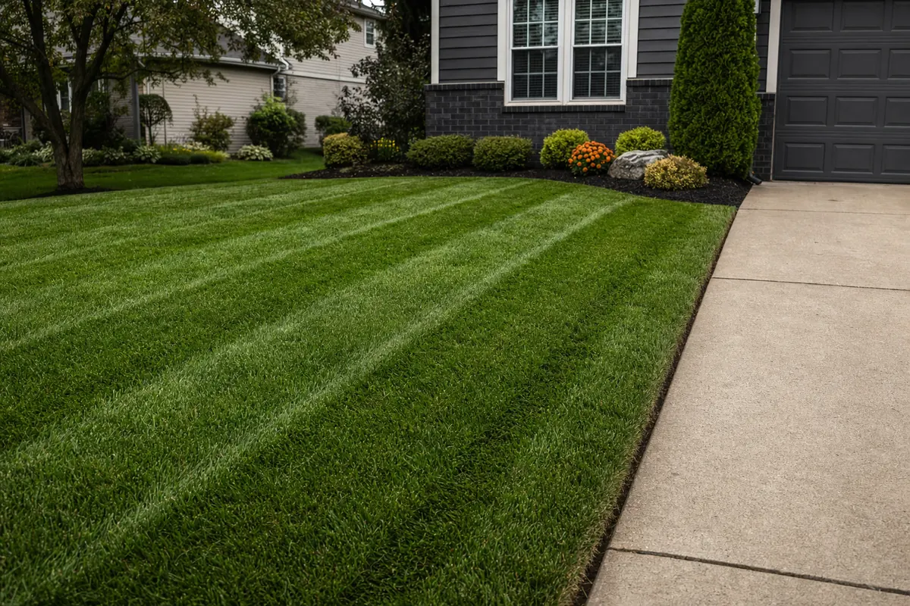
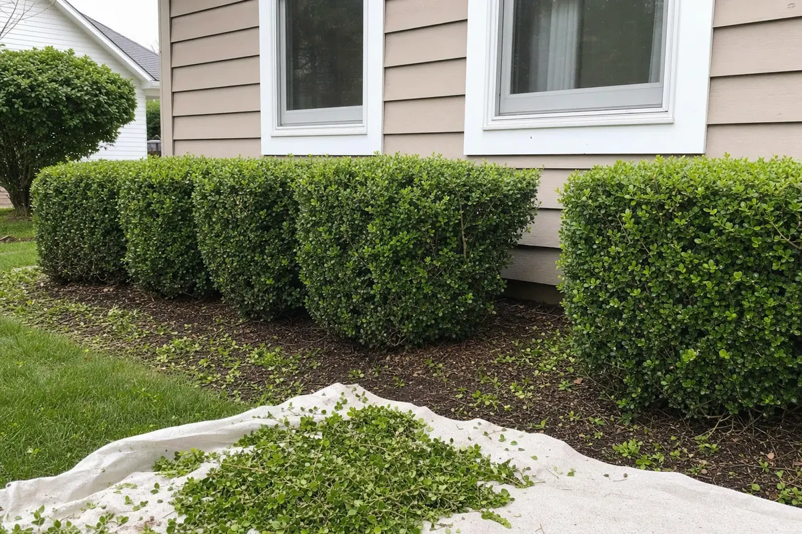
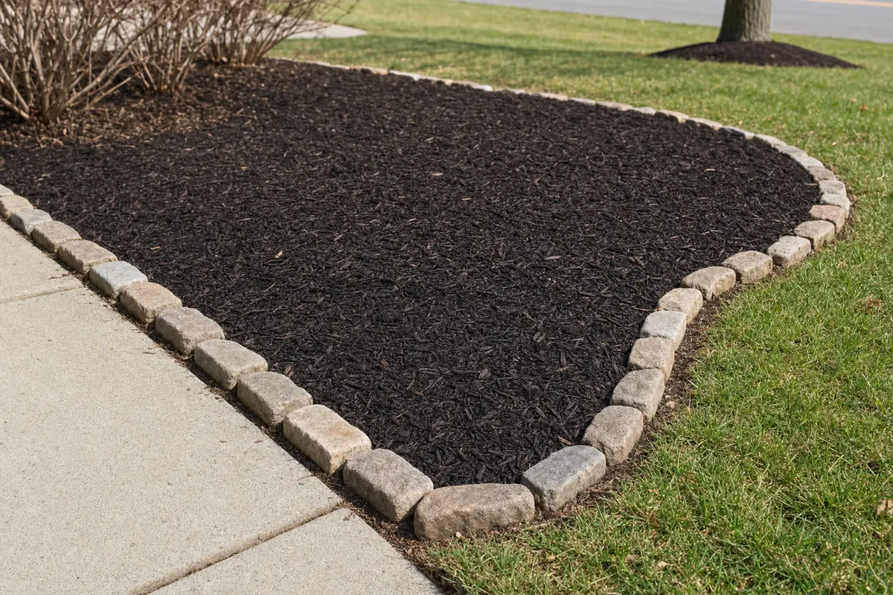

General mowing
Front and back yard mowing with edging and blowoff every visit. Weekly or bi-weekly route work.
Add-on: dog waste cleanup available for an additional fee — details quoted with your service.
Clean cuts. Less yard time. More your time.
Weekly and bi-weekly mowing with edging and blowoff — plus mulch and stone bed refreshes and junk haul-away within 15 miles of Lorain.
Pick what you need. Steel Harbor handles the rest.
Front and back yard mowing with edging and blowoff every visit. Weekly or bi-weekly route work.
Add-on: dog waste cleanup available for an additional fee — details quoted with your service.
Mulch or stone refreshes for your existing beds. Clean lines, tidy edges, finished look.
Yard debris, old furniture, appliances, and general clutter loaded up and hauled off.
A 15-mile route keeps scheduling tight and callbacks fast. Steel Harbor serves Lorain, North Ridgeville, and route-fit addresses across nearby Lorain County communities.
A look at the everyday route work — mowing, light hedge tidy-ups, and minor bed edging.



Starting prices for typical homes inside the 15-mile route. Final price depends on yard size, grass height, access, disposal fees, and how much needs hauled.
$40starting / visit
Includes front and back mowing, trimming, driveway and walkway edging, and a full blowoff.
Add-on: dog waste pickup before mowing — +$10 light pickup; +$15–$25 for heavier cleanup or multiple dogs.
$175starting + materials
Existing beds only — mulch or stone refreshes and minor bed-edge cleanup. No bed builds, redesigns, or tall hedge work.
$65starting / curbside item
No hazardous materials. Dump and disposal fees can affect the final price. Curbside or driveway pickup keeps pricing lower.
Send a few photos and the address. You’ll get a clear number before the work starts.
Price My CutLawn mowing in Lorain starts at $40 per visit for weekly route work and $45 for bi-weekly. First cuts on overgrown grass add $15–$35. Final pricing depends on yard size, grass height, and access.
Lawn mowing service runs within 15 miles of Lorain, Ohio — including Lorain, Amherst, Sheffield, Sheffield Lake, Elyria, Avon Lake, and North Ridgeville.
Front and back yard mowing, string trimming, driveway and walkway edging, and a full blowoff every visit. Dog waste pickup is available as an add-on.
Use the Price My Cut form below or call (440) 316-9356. Send the address and a few photos and Steel Harbor will follow up with a clear number.
Send the address, what you need, and the best way to reach you. Steel Harbor will check route fit and follow up.